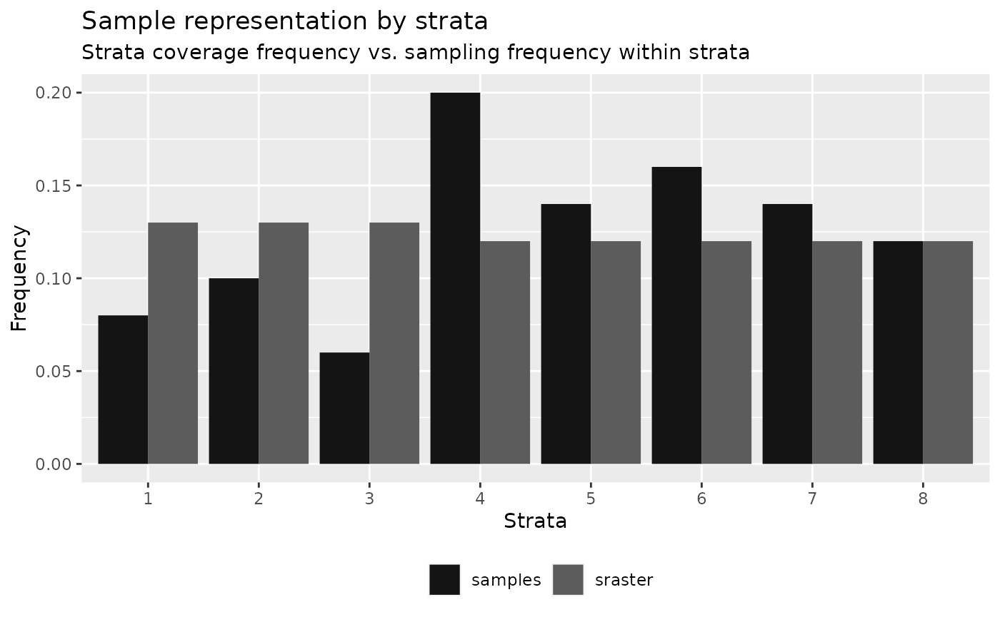
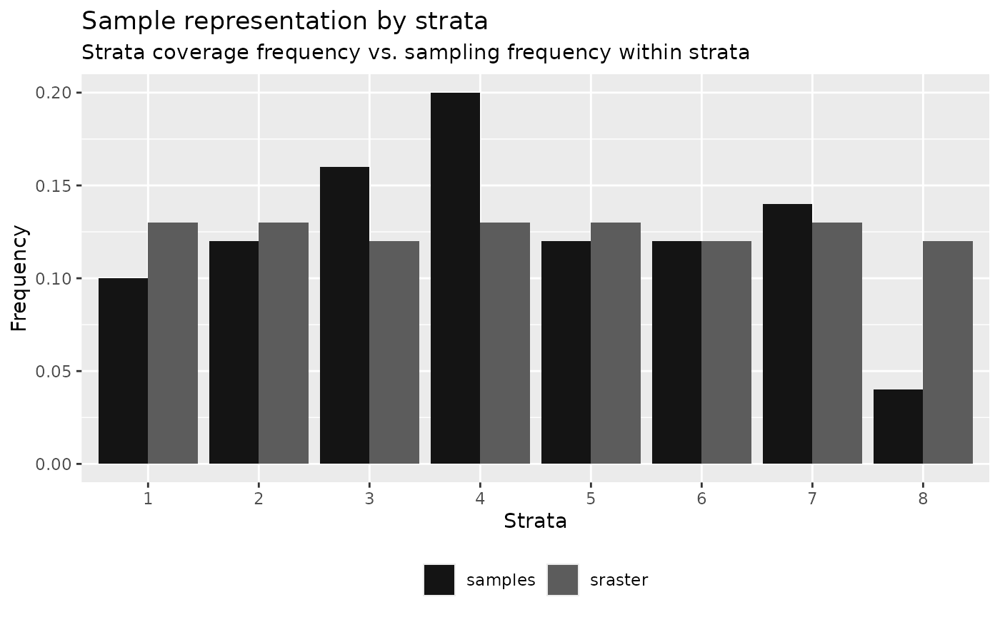

Currently, there are 8 functions associated with the calculate verb in the sgsR package:
calculate_representation()- compare the representation of strata in existing samplescalculate_distance()- per pixel distance to the closestaccessvectorcalculate_pcomp()- principal components of the inputmrastercalculate_sampsize()- determines appropriate estimated sample sizes based on relative standard errorcalculate_allocation()- sample allocation algorithm - proportional / optimal / equal / manual samplingcalculate_coobs()- determine howexistingsamples are distributed amongmrastercovariatescalculate_pop()- generate population level information (PCA / quantile matrix / covariance matrix) of inputmrastercalculate_lhsOpt()- testing to determine optimal Latin hypercube sampling parameters including sample number
calculate_* functions serve as intermediary helper functions. In this section we outline and demonstrate how these functions can be used.
calculate_representation()
calculate_representation() function allows the users to verify how well the stratification is represented in their existing sample networks. Users input an sraster and their existing samples to the calculate_representation() function, which will result in tabular and graphical (if plot = TRUE) outputs that compare strata coverage frequency and sampling frequency.
#--- quantile sraster ---#
quantiles <- strat_quantiles(mraster = mraster$zq90,
nStrata = 8)
#--- random samples ---#
srs <- sample_srs(raster = sraster,
nSamp = 50)
#--- calculate representation ---#
calculate_representation(sraster = quantiles,
existing = srs,
plot = TRUE)
#> # A tibble: 8 × 6
#> strata srasterFreq sampleFreq diffFreq nSamp need
#> <dbl> <dbl> <dbl> <dbl> <int> <dbl>
#> 1 1 0.13 0.14 0.0100 7 0
#> 2 2 0.13 0.06 -0.07 3 4
#> 3 3 0.13 0.18 0.05 9 -2
#> 4 4 0.12 0.18 0.06 9 -3
#> 5 5 0.12 0.1 -0.0200 5 1
#> 6 6 0.12 0.1 -0.0200 5 1
#> 7 7 0.12 0.16 0.04 8 -2
#> 8 8 0.12 0.08 -0.04 4 2The tabular output presents the frequency of coverage for each strata (srasterFreq) (what % of the landscape does the strata cover) and the sampling frequency within each strata (sampleFreq) (what % of total existing samples are in the strata). The difference (diffFreq) between coverage frequency and sampling frequency determines whether the values are over-represented (positive numbers) or under-represented (negative numbers). This value translates to a discrete need attribute that defines whether there is a need to add or remove samples to meet the number of samples necessary to be considered representative of the strata inputted in sraster.
Performing the algorithm on a sample set derived using sample_strat() exhibits proportional sampling to strata coverage.
calculate_representation(sraster = sraster,
existing = existing,
plot = TRUE)#> # A tibble: 4 × 6
#> strata srasterFreq sampleFreq diffFreq nSamp need
#> <dbl> <dbl> <dbl> <dbl> <int> <dbl>
#> 1 1 0.25 0.25 0 50 0
#> 2 2 0.25 0.25 0 50 0
#> 3 3 0.25 0.25 0 50 0
#> 4 4 0.25 0.25 0 50 0Presence of very small (negligible) differences between srasterFreq and sampleFreq is common. In these situations, it is important for the user to determine whether to add or remove the samples.
calculate_distance
calculate_distance() function takes the input raster and access data and outputs the per pixel distance to the nearest access point. This function has a specific value for constraining the sampling protocols, such as the sample_clhs() function, where the output raster layer can be used as the cost for the constraint. The output raster consists of the input appended with the calculated distance layer (dist2access).
calculate_distance(raster = sraster, # input
access = access, # define access road network
plot = TRUE) # plot
#> class : SpatRaster
#> dimensions : 277, 373, 2 (nrow, ncol, nlyr)
#> resolution : 20, 20 (x, y)
#> extent : 431100, 438560, 5337700, 5343240 (xmin, xmax, ymin, ymax)
#> coord. ref. : UTM Zone 17, Northern Hemisphere
#> sources : memory
#> memory
#> names : strata, dist2access
#> min values : 1.000000000, 0.006621213
#> max values : 4.00, 1061.66Access network polygons with a large number of features and/or large spatial extent could result in slow processing times.
calculate_pcomp
calculate_pcomp() function takes mraster as the input and performs principal component analysis. The number of components defined by the nComp parameter specifies the number of components that will be rasterized onto the output.
calculate_pcomp(mraster = mraster, # input
nComp = 3, # number of components to output
plot = TRUE, # plot
details = TRUE) # details about the principal component analysis appended#> $pca
#> Standard deviations (1, .., p=3):
#> [1] 1.5479878 0.7359109 0.2493371
#>
#> Rotation (n x k) = (3 x 3):
#> PC1 PC2 PC3
#> zq90 0.6286296 -0.1795433 -0.7566961
#> pzabove2 0.5104140 0.8293596 0.2272450
#> zsd 0.5867729 -0.5290812 0.6130014
#>
#> $raster
#> class : SpatRaster
#> dimensions : 277, 373, 3 (nrow, ncol, nlyr)
#> resolution : 20, 20 (x, y)
#> extent : 431100, 438560, 5337700, 5343240 (xmin, xmax, ymin, ymax)
#> coord. ref. : UTM Zone 17, Northern Hemisphere
#> sources : memory
#> memory
#> memory
#> names : PC1, PC2, PC3
#> min values : -4.402269, -5.357801, -1.446156
#> max values : 5.282663, 2.155242, 1.510955
calculate_sampsize
calculate_sampsize() function allows the user to estimate an appropriate sample size using the relative standard error (rse) of input metrics. If the input mraster contains multiple layers, the sample sizes will be determined for all layers. If plot = TRUE and rse is defined, a sequence of rse values will be visualized with the indicators and the values for the matching sample size.
#--- determine sample size based on relative standard error (rse) of 1% ---#
calculate_sampsize(mraster = mraster,
rse = 0.01)
#> nSamp rse var
#> 1 1394 0.01 zq90
#> 2 1341 0.01 pzabove2
#> 3 1859 0.01 zsd
#--- change default threshold sequence values ---#
#--- if increment and rse are not divisible the closest value will be taken ---#
p <- calculate_sampsize(mraster = mraster,
rse = 0.025,
start = 0.01,
end = 0.08,
increment = 0.01,
plot = TRUE)
#> 'rse' not perfectly divisible by 'increment'. Selecting closest sample size (rse = 0.03) based on values.
p
#> $nSamp
#> # A tibble: 3 × 3
#> # Groups: var [3]
#> nSamp rse var
#> <dbl> <dbl> <chr>
#> 1 157 0.03 zq90
#> 2 151 0.03 pzabove2
#> 3 211 0.03 zsd
#>
#> $plot
calculate_allocation
calculate_allocation() function determines how to allocate samples based on the desired number of samples (nSamp) and the input sraster. This function is used internally in a number of functions, including sample_strat. Currently, there are three methods for allocations included: proportional (prop; default), optimal (optim), equal (equal), and manual (manual) allocation.
- Proportional - Samples are allocated based on the coverage area of the strata. This is the default allocation method.
- Optimal - Samples are allocated based on the variation within the strata.
- Equal - Same number of samples ( defined by
nSamp) are allocated to each strata. - Manual - Numeric vector
weightsis provided allowing users to manually assign weights to strata.
Proportional allocation
#--- perform grid sampling ---#
calculate_allocation(sraster = sraster,
nSamp = 200)
#> strata total
#> 1 1 50
#> 2 2 50
#> 3 3 50
#> 4 4 50
#--- calculate existing samples to include ---#
e.sr <- extract_strata(sraster = sraster,
existing = existing)
calculate_allocation(sraster = sraster,
nSamp = 200,
existing = e.sr)
#> strata total need
#> 1 1 0 50
#> 2 2 0 50
#> 3 3 0 50
#> 4 4 0 50Notice that some of the values under total from the result above are negative. The negative value indicates that the existing samples over represent those strata and that some of the samples could removed to prevent over-representation. $total indicates the number of samples that could be added or removed.
Optimal Allocation
Optimal allocation method uses the variation within the strata metric to allocate samples. This means that in addition to providing and sraster, that a specific metric (mraster) must be provided to calculate variation to optimally allocate samples.
calculate_allocation(sraster = sraster, # stratified raster
nSamp = 200, # desired sample number
existing = e.sr, #existing samples
allocation = "optim", # optimal allocation
mraster = mraster$zq90, # metric raster
force = TRUE) # force nSamp number
#> # A tibble: 4 × 3
#> # Rowwise:
#> strata total need
#> <dbl> <dbl> <dbl>
#> 1 1 27 77
#> 2 2 -14 36
#> 3 3 -25 25
#> 4 4 12 63Equal allocation
There may be situations where the user wants to have the same number of samples allocated to each strata. In these situations use allocation = equal. In this case, nSamp refers to the total number of samples per strata, instead of the overall total number of samples.
calculate_allocation(sraster = sraster, # stratified raster
nSamp = 20, # desired sample number
allocation = "equal") # optimal allocation
#> Implementing equal allocation of samples.
#> # A tibble: 4 × 2
#> strata total
#> <dbl> <dbl>
#> 1 1 20
#> 2 2 20
#> 3 3 20
#> 4 4 20The code in the demonstration above yields a total of 80 samples (20 nSamp for each of the 4 strata in sraster).
Manual allocation
The user may wish to manually assign weights to strata. In this case, allocation = manual can be used and weights must be provided as a numeric vector (e.g. weights = c(0.2, 0.2, 0.2, 0.4) where sum(weights) == 1). In this case, nSamp will be allocated based on weights.
weights <- c(0.2, 0.2, 0.2, 0.4)
calculate_allocation(sraster = sraster, # stratified raster
nSamp = 20, # desired sample number
allocation = "manual", # manual allocation
weights = weights) # weights adding to 1
#> Implementing allocation of samples based on user-defined weights.
#> strata total
#> 1 1 4
#> 2 2 4
#> 3 3 4
#> 4 4 8The code in the demonstration above yields a total of 20 samples with plots being allocated based on the weights provided in ascending strata order.
Sample evaluation algorithms
The following algorithms were initially developed by Dr. Brendan Malone from the University of Sydney. Dr. Brendan Malone and his colleagues graciously supplied an in depth description of the functionality of these algorithms, which were originally developed to improve soil sampling strategies. These functions were modified and implemented to be used for structurally guided sampling approaches. Many thanks to Dr. Malone for his excellent collaboration and being a proponent of open source algorithms.
Please consult the original reference for these scripts and ideas as their paper holds extremely helpful and valuable information to understand their rationale for sampling and algorithm development.
Malone BP, Minansy B, Brungard C. 2019. Some methods to improve the utility of conditioned Latin hypercube sampling. PeerJ 7:e6451 DOI 10.7717/peerj.6451
calculate_coobs
calculate_coobs() function performs the COunt of OBServations (coobs) algorithm using existing sample data and mraster covariates. This algorithm helps the user understand how the existing sample data set is distributed among the landscape in relation to the mraster covariates. The output coobs raster can be used to constrain clhs sampling using the sample_clhs() function to the areas that are under-represented.
The coobs raster determines how many observations are similar in terms of the covariate space at every pixel. This function takes advantage of parallel processing routines.
calculate_coobs(mraster = mraster, # input
existing = existing, # existing samples
cores = 4, # parallel cores to use
details = TRUE, # provide details from algorithm output
plot = TRUE) # plotLatin hypercube sampling evaluation algorithms
The following 2 algorithms presents the means to maximize the effectiveness of the latin hypercube sampling protocols.
calculate_pop
calculate_pop() function calculates population level statistics of the mraster covariates that are being used, which includes calculating the principal components, quantile & covariate distributions, and Kullback-Leibler divergence testing. The outputs produced from this functions are required to use the calculate_lhsOpt() function described in the following section. Additionally, this algorithm can be pre-emptively used to calculate matQ and MatCov, two values that are used for the sample_ahels() function. This will save processing time during sampling.
#--- by default all statistical data are calculated ---#
calculate_pop(mraster = mraster) # input The output list contains the following:
$values- Pixel values frommraster$pcaLoad- PCA loadings$matQ- Quantile matrix$matCov- Covariate matrix
#--- statistical analyses can be chosen by setting their parameter to `FALSE` ---#
mat <- calculate_pop(mraster = mraster, # input
nQuant = 10) # desired number of quantiles
#--- use matrix output within sample ahels algorithm ---#
sample_ahels(mraster = mraster,
existing = existing,
nQuant = 10,
nSamp = 50,
matCov = mat)
calculate_lhsOpt
calculate_lhsOpt() function performs a bootstrapped latin hypercube sampling approach where population level analysis of mraster data is performed to determine the optimal latin hypercube sample size.
Using data calculated using the calculate_pop() and varying sample sizes defined by minSamp, maxSamp, step and rep. Sampling protocols are conducted and statistical effectiveness of those sampling outcomes are evaluated to determine where sample size is minimized and statistical representation is maximized.
#--- calculate lhsPop details ---#
poplhs <- calculate_pop(mraster = mr)
calculate_lhsOpt(popLHS = poplhs)
calculate_lhsOpt(popLHS = poplhs,
PCA = FALSE,
iter = 200)